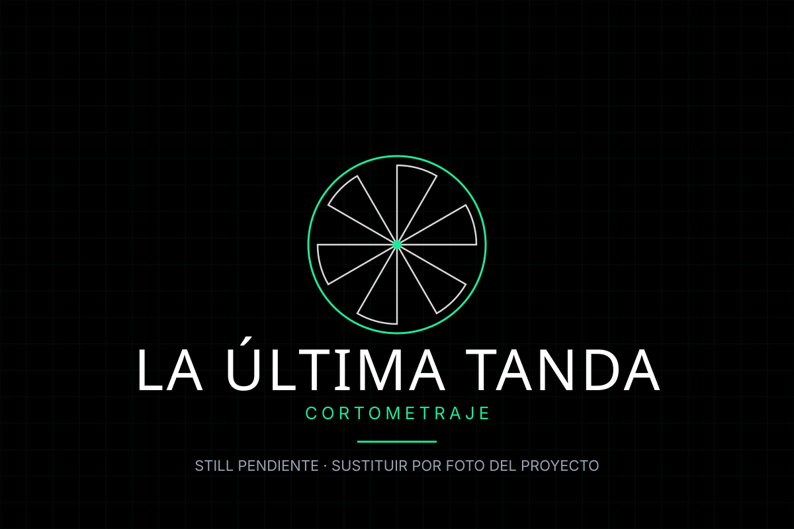
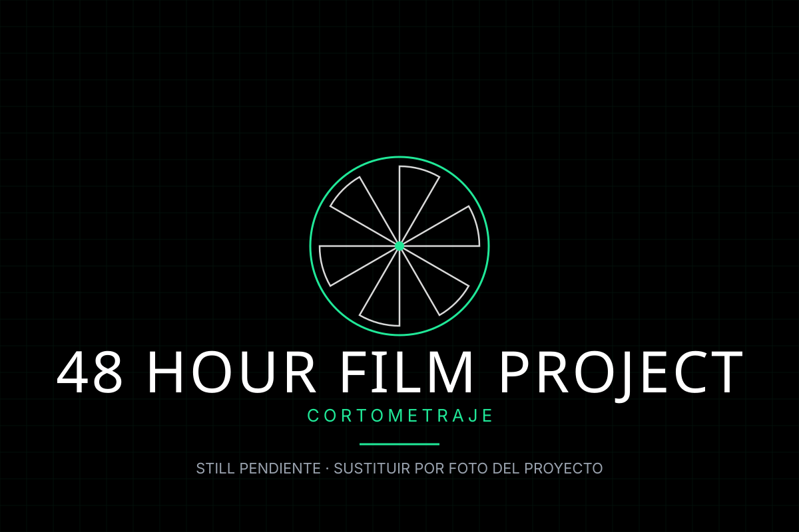
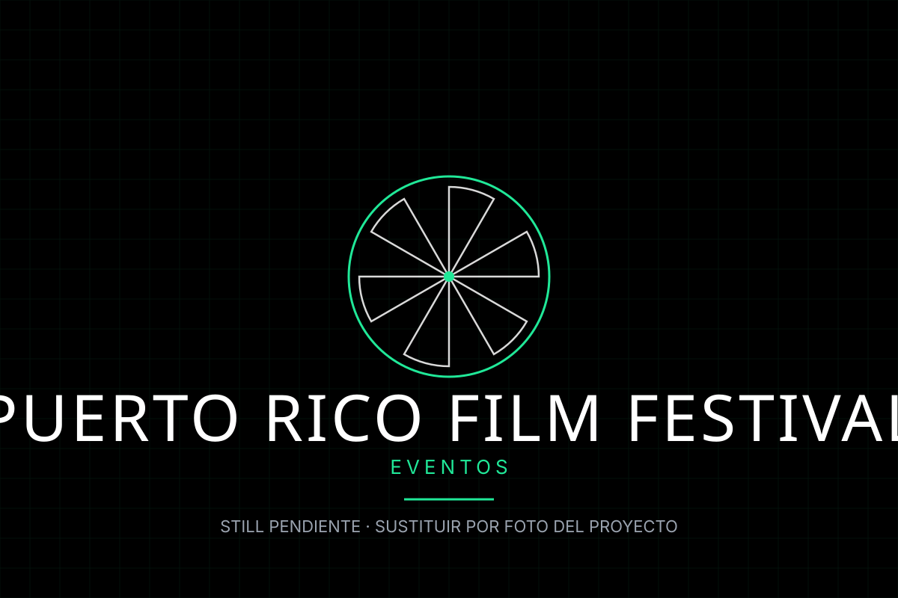
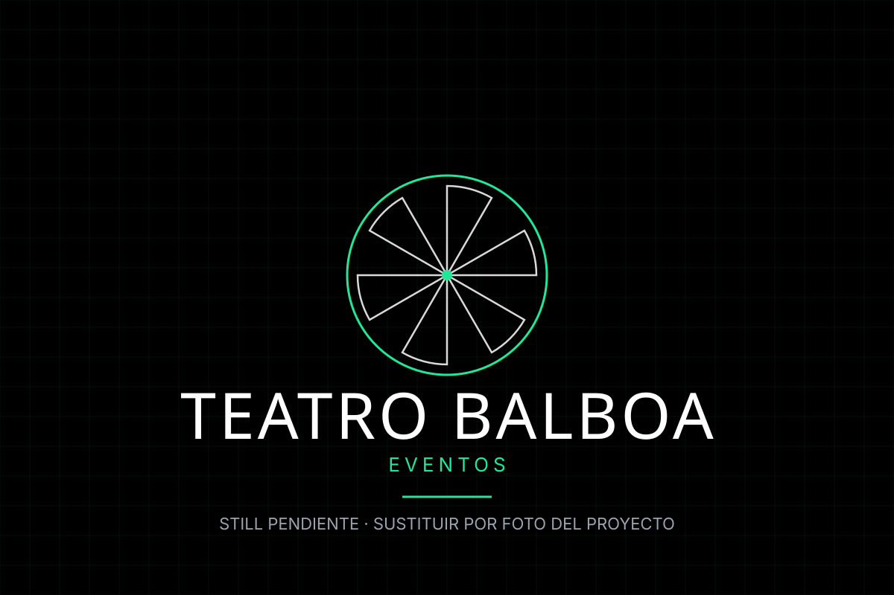
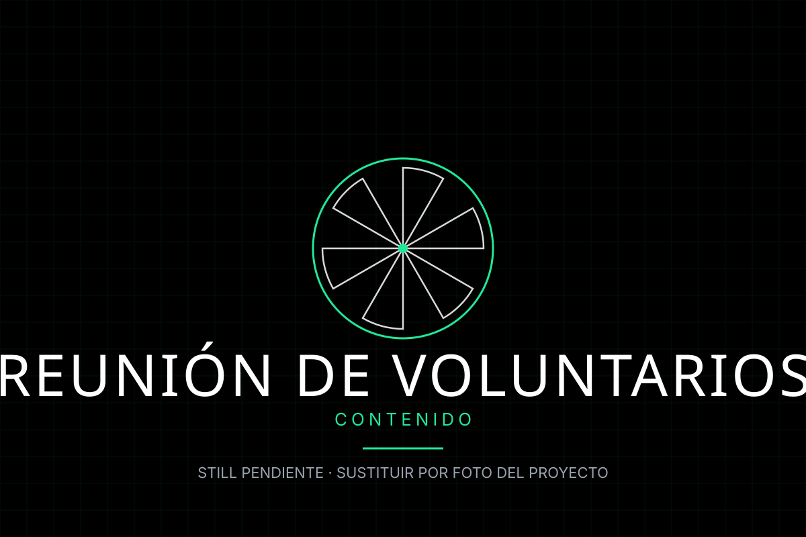
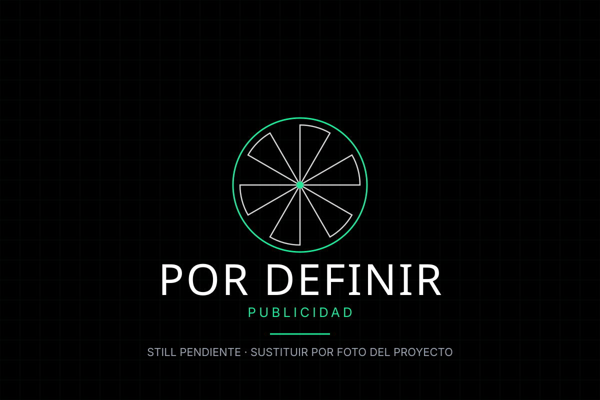

Publicidad
Spots para TV, digital y redes. Guion, producción, casting y locución con entrega lista para emitir.
Producción audiovisual · Santurce, Puerto Rico
Producimos publicidad, cortometrajes, documental y cobertura de eventos para marcas y organizaciones. Del concepto al master final, con un solo equipo.
Con los que trabajamos
Qué hacemos
Seis áreas, un mismo equipo de guion, cámara, edición y postproducción.
Spots para TV, digital y redes. Guion, producción, casting y locución con entrega lista para emitir.
Narrativa corta con mirada propia. Guion, rodaje, sala y entrega en formatos de festival y de marca.
Historias reales con interviewing, archivo y una postproducción que sostiene el relato.
Conciertos, festivales y eventos. Multi-cámara, mezcla de audio en directo y entrega editada al día siguiente.
Contenido vertical, series de reels y reportes mensuales. Formato constante, no piezas sueltas.
Reportaje, producto y retrato. Book de marca con dirección de arte incluida.
Portafolio
Filtra por categoría para ver cómo trabajamos en cada formato.
 Cortometraje
Cortometraje
Cortometraje de estudiantes del co-curricular, con su propio cartel y su propio reparto.

CortometrajeLa muestra anual: cortos del programa, sala llena y la cobertura completa de la noche.

CortometrajeCasting y producción bajo presión de tiempo: 48 horas del guion al master.

EventosCharla, selección y foto de equipo frente al step-and-repeat del festival.

EventosCobertura vertical de la marquesina del Teatro Avellanet con la lona del festival.

RedesEl equipo junto, los proyectos del año en pantalla y la convocatoria abierta.

PublicidadEspacio reservado para el primer trabajo comercial de la casa.
No hay proyectos en esta categoría todavía.
Cómo trabajamos
Entendemos el objetivo, el público y qué tiene que pasar después de ver el piece.
Concepto, presupuesto desglosado y calendario. Sin costes sorpresa.
Equipo técnico y plan de rodaje. Te mandamos un parte diario.
Edición, color, sonido y todos los formatos que necesites. En tu deadline.
Transparencia
Multimedios es el proyecto co-curricular de la Escuela de Comunicación Ferré Rangel de la Universidad del Sagrado Corazón. Lo hacemos estudiantes de Producción Audiovisual y Cine, bajo la guía del programa.
Un proyecto co-curricular. No es una agencia comercial ni la oficina de prensa de la universidad.
El campus de la ECFR, en Santurce, San Juan, Puerto Rico, es la base. Las piezas salen también a sala y a festival.
Los trabajos por encargo se dicen como tales. Si hay algo que no depende de nosotros, preferimos decirlo antes de empezar.
Consulta el MANUAL-DE-MARCA.md del repositorio para las reglas de
nombre, color y fotografía que rigen este sitio.
Empezar
Si representas a una organización y quieres un proyecto audiovisual, rellena el formulario. Leemos todo y respondemos con una primera valoración. También puedes escribir a multimedios@example.com.